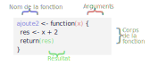
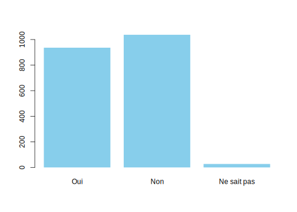
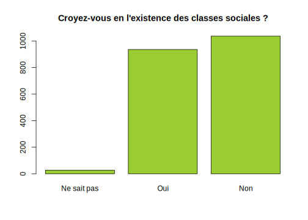

Partie 14 Écrire ses propres fonctions
14.1 Structure d’une fonction
Nous avons vu lors de l’introduction à R que le langage repose sur deux grands concept : les objets et les fonctions. Pour reprendre une citation de John Chambers, en R, tout ce qui existe est un objet, et tout ce qui se passe est une fonction.
Le principe d’une fonction est de prendre en entrée un ou plusieurs arguments (ou paramètres), d’effectuer un certain nombre d’actions et de renvoyer un résultat :
Nous avons déjà rencontré et utilisé un grand nombre de fonctions, certaines assez simples (mean, max…) et d’autres beaucoup plus complexes (ggplot, group_by…). R, comme tout langage de programmation, offre la possibilité de créer et d’utiliser ses propres fonctions.
Voici un exemple de fonction très simple, quoi que d’une utilité douteuse, puisqu’elle se contente d’ajouter 2 à un nombre :
ajoute2 <- function(x) {
res <- x + 2
return(res)
}En exécutant ce code, on crée une nouvelle fonction nommée ajoute2, que l’on peut directement utiliser dans un script ou dans la console :
ajoute2(3)[1] 5Essayons de décomposer pas à pas la structure de cette première fonction.
D’abord, une fonction est créée en utilisant l’instruction function. Celle-ci est suivie d’une paire de parenthèses et d’une paire d’accolades.
function() {
}Dans les parenthèses, on indique les arguments de la fonction, ceux qui devront être indiqués quand nous l’appellerons. Ici notre fonction ne prend qu’un seul argument, que nous avons décidé de nommer x :
function(x) {
}Les accolades comprennent une série d’instructions R qui constituent le corps de notre fonction. C’est ce code qui sera exécuté quand notre fonction est appelée. On peut utiliser dans le corps de la fonction les arguments qui lui sont passés. Ici, la première ligne utilise la valeur de l’argument x, lui ajoute 2 et stocke le résultat dans un nouvel objet res :
function(x) {
res <- x + 2
}Pour qu’elle soit utile, notre fonction doit renvoyer le résultat qu’elle a calculé précédemment. Ceci se fait via l’instruction return à qui on passe la valeur à retourner à l’utilisateur :
function(x) {
res <- x + 2
return(res)
}Enfin, pour que notre fonction puisse être appelée et utilisée, nous devons lui donner un nom, ou plus précisément la stocker dans un objet :
ajoute2 <- function(x) {
res <- x + 2
return(res)
}Les fonctions étant des objets comme les autres, elles suivent les mêmes contraintes pour leur nom : on a donc droit aux lettres, chiffres, point et tiret bas.
Avec le code précédent, on a donc créé un nouvel objet ajoute2 de type function. Cette nouvelle fonction prend un seul argument x, calcule la valeur x + 2 et retourne ce résultat. On l’utilise en tapant son nom suivi de la valeur de ses arguments entre parenthèses, par exemple :
ajoute2(41)[1] 43Ou encore :
y <- 5
z <- ajoute2(y)
z[1] 7À noter que notre fonction marche aussi si on lui passe un vecteur en argument :
vec <- 1:5
ajoute2(vec)[1] 3 4 5 6 7Si on récapitule, une fonction se définit donc de la manière suivante :

À noter qu’une fonction peut évidemment prendre plusieurs arguments. Dans ce cas on liste les arguments dans les parenthèses en les séparant par des virgules :
somme <- function(x, y) {
return(x + y)
}somme(3, 5)[1] 814.2 Exemples de fonctions
Prenons un autre exemple : par défaut on sait que la fonction table retourne le tri à plat en effectifs d’une variable qualitative. On pourrait dès lors créer notre propre fonction qui renvoie plutôt le tri à plat en pourcentages. Voici une manière de le faire :
prop_tab <- function(v) {
tri <- table(v)
tri <- tri / sum(tri) * 100
return(tri)
}Notre fonction prend en entrée un argument nomme v, en l’occurrence un vecteur représentant une variable qualitative. On commence par faire le tri à plat de ce vecteur avec table, puis on calcule la répartition en pourcentages en divisant ce tri à plat par l’effectif total (sum(tri)) et en multipliant par 100.
Testons sur une variable de hdv2003 :
library(questionr)
data(hdv2003)
prop_tab(hdv2003$qualif)v
Ouvrier specialise Ouvrier qualifie
12.280702 17.664852
Technicien Profession intermediaire
5.202662 9.679371
Cadre Employe
15.728978 35.934664
Autre
3.508772 Ça fonctionne, mais l’affichage d’un grand nombre de chiffres après la virgule peut nuire à la lisibilité du résultat. On pourrait donc améliorer notre fonction en arrondissant le résultat avec la fonction round() avant de le retourner :
prop_tab <- function(v) {
tri <- table(v)
tri <- tri / sum(tri) * 100
tri <- round(tri, 2)
return(tri)
}
prop_tab(hdv2003$qualif)v
Ouvrier specialise Ouvrier qualifie
12.28 17.66
Technicien Profession intermediaire
5.20 9.68
Cadre Employe
15.73 35.93
Autre
3.51
Quand on modifie une fonction existante, il faut exécuter à nouveau le code correspondant à sa définition pour la “mettre à jour”. Ici, si on ne le fait pas l’objet prop_tab contiendra toujours l’ancienne définition.
Ça marche ! Cela dit, limiter à 2 chiffres après la virgule ne convient pas forcément dans tous les cas. L’idéal serait d’offrir la possibilité à l’utilisateur de la fonction de choisir lui-même la précision de l’affichage. Comment ? Tout simplement en ajoutant un deuxième argument à la fonction, que nous nommerons decimales, et en utilisant cet argument à la place du 2 dans l’appel à round() :
library(knitr)
library(flair)Désormais, notre fonction s’utilise en lui indiquant deux arguments :
prop_tab(hdv2003$qualif, decimales = 1)v
Ouvrier specialise Ouvrier qualifie
12.3 17.7
Technicien Profession intermediaire
5.2 9.7
Cadre Employe
15.7 35.9
Autre
3.5 Enfin, dernier exemple, parfois une fonction n’a pas pour objectif de renvoyer un résultat mais d’accomplir une action, comme générer un graphique26. Dans ce cas la fonction peut ne pas inclure d’instruction return().
Par exemple la fonction suivante prend en argument un vecteur et génère un diagramme en barres du tri à plat de cette variable (en modifiant la présentation au passage) :
my_barplot <- function(var) {
tri <- table(var)
barplot(tri, col = "skyblue", border = NA)
}
my_barplot(hdv2003$clso)
14.3 Utilité des fonctions
Une question légitime est de se demander dans quels cas il est utile de créer une fonction.
Une règle assez courante consiste à dire que dès qu’on a répété le même code plus de deux fois, il est préférable d’en faire une fonction. Celles-ci ont en effet comme avantage d’éviter la duplication du code.
Imaginons que vous avez récupéré un jeu de données avec toute une série de variables ayant les modalités "1" et "2" qui correspondent aux réponses "Oui" et "Non" à des questions.
On crée un data frame fictif comportant quatre variables de ce type :
df <- data.frame(
q1 = c("1", "1", "2", "1"),
q2 = c("1", "2", "2", "2"),
q3 = c("2", "2", "1", "1"),
q4 = c("1", "2", "1", "1")
)
df# A tibble: 4 x 4
q1 q2 q3 q4
<chr> <chr> <chr> <chr>
1 1 1 2 1
2 1 2 2 2
3 2 2 1 1
4 1 2 1 1 On sait qu’on peut facilement recoder l’une de ces variables à l’aide de la fonction fct_recode de l’extension forcats :
df$q1 <- fct_recode(df$q1,
"Oui" = "1",
"Non" = "2"
)On peut donc être tenté de dupliquer ce code autant de fois qu’on a de questions à recoder :
df$q1 <- fct_recode(df$q1,
"Oui" = "1",
"Non" = "2"
)
df$q2 <- fct_recode(df$q2,
"Oui" = "1",
"Non" = "2"
)
df$q3 <- fct_recode(df$q3,
"Oui" = "1",
"Non" = "2"
)
df$q4 <- fct_recode(df$q4,
"Oui" = "1",
"Non" = "2"
)Il est toutefois plus judicieux de créer une fonction spécifique pour ce recodage :
recode_oui_non <- function(var) {
new_var <- fct_recode(var,
"Oui" = "1",
"Non" = "2"
)
return(new_var)
}Il est alors très simple d’appliquer ce recodage à plusieurs variables :
df$q1 <- recode_oui_non(df$q1)
df$q2 <- recode_oui_non(df$q2)
df$q3 <- recode_oui_non(df$q3)
df$q4 <- recode_oui_non(df$q4)Autre avantage, si nous réalisons que nous avons commis une erreur et qu’en fait le code "1" correspondait à "Non" et le code "2" à "Oui", on n’a pas besoin de modifier tous les endroits où l’on a copié/collé notre recodage, mais seulement la définition de la fonction.
Les avantages de procéder ainsi sont donc multiples :
- créer une fonction évite la répétition du code et le rend moins long et plus lisible, surtout si on donne à notre fonction un nom explicite permettant de comprendre immédiatement ce qu’elle fait.
- créer une fonction évite les erreurs de copier/coller du code.
- une fonction permet de mettre à jour plus facilement son code : si on se rend compte d’une erreur ou si on souhaite améliorer son fonctionnement, on n’a qu’un seul endroit à modifier.
- enfin, créer des fonctions permet potentiellement de rendre son code réutilisable d’un script à l’autre ou même d’un projet à l’autre. Voire, à terme, de les regrouper dans un package pour soi-même ou pour diffusion à d’autres utilisateurs de R.
14.4 Arguments d’une fonction
14.4.1 Définition des arguments
Les arguments d’une fonction sont tout ce qu’on fournit “en entrée” à cette dernière, et qui vont soit lui fournir des données, soit modifier son comportement. La liste des arguments acceptés par une fonction est donnée lors de l’appel de function :
ma_fonction <- function(arg1, arg2, arg3) {
...
}Lors de l’appel de la fonction, on peut lui passer les arguments par position :
ma_fonction(x, 12, TRUE)Dans ce cas, arg1 vaudra x, arg2 vaudra 12 et arg3 vaudra TRUE.
On peut aussi passer les arguments par nom :
ma_fonction(arg1 = x, arg2 = 12, arg3 = TRUE)Quand on passe les arguments par nom, on peut les indiquer dans l’ordre que l’on souhaite :
ma_fonction(arg1 = x, arg3 = TRUE, arg2 = 12)Et on peut évidemment mélanger passage par position et passage par nom :
ma_fonction(x, 12, arg3 = TRUE)Le plus souvent, les premiers arguments acceptés par une fonction sont les données sur lesquelles elle va travailler, tandis que les arguments suivants sont des paramètres qui vont modifier son comportement. Par exemple, median accepte comme premier argument x, un vecteur, puis un argument na.rm qui va changer sa manière de calculer la médiane des valeurs de x.
En général on appelle la fonction en passant les paramètres correspondant aux données par position, et les autres en les nommant. C’est ainsi qu’on ne fait ni median(x = tailles, na.rm = TRUE) ni median(tailles, TRUE), mais plutôt median(tailles, na.rm = TRUE).
En ce qui concerne le nom des arguments eux-mêmes, en général ceux correspondant aux données transmises à une fonction peuvent avoir des noms relativement génériques (x, y, v pour un vecteur, data ou df pour un data.frame…). Les autres doivent par contre avoir des noms à la fois courts et explicites : par exemple plutôt decimales que nd ou nombre_de_decimales.
14.4.2 Valeurs par défaut
Au moment de la définition de la fonction, on peut indiquer une valeur par défaut qui sera prise par l’argument si l’utilisateur de la fonction n’en fournit pas.
Si on reprend la fonction prop_tab déjà définie plus haut :
prop_tab <- function(v, decimales) {
tri <- table(v)
tri <- tri / sum(tri) * 100
tri <- round(tri, decimales)
return(tri)
}On peut indiquer une valeur par défaut de l’argument decimales (qui indique le nombre de chiffres à conserver après la virgule) de la manière suivante :
prop_tab <- function(v, decimales = 1) {
tri <- table(v)
tri <- tri / sum(tri) * 100
tri <- round(tri, decimales)
return(tri)
}Si on appelle prop_tab en lui passant uniquement le vecteur v, on voit que decimales vaut bien 1 :
prop_tab(hdv2003$qualif)v
Ouvrier specialise Ouvrier qualifie
12.3 17.7
Technicien Profession intermediaire
5.2 9.7
Cadre Employe
15.7 35.9
Autre
3.5 14.4.3 L’argument ...
Une fonction peut prendre un argument spécial, nommé ... :
ma_fonction <- function(x, correct = TRUE, ...) {
}Cet argument spécial “capture” tous les arguments présents et qui n’ont pas été définis avec la fonction. Par exemple, si on appelle la fonction précédente avec :
ma_fonction(1:5, correct = FALSE, title = "Titre", size = 12)NULLAlors ... contiendra les arguments title et size et leurs valeurs.
En général ... est utilisé pour passer ces arguments à d’autres fonctions. Reprenons notre fonction my_barplot définie précédemment :
my_barplot <- function(var) {
tri <- table(var)
barplot(tri, col = "skyblue", border = NA)
}On pourrait permettre à l’utilisateur de personnaliser les couleurs des barres et de leurs bordures en ajoutant des arguments supplémentaires :
my_barplot <- function(var, col = "skyblue", border = NA) {
tri <- table(var)
barplot(tri, col = col, border = border)
}Mais si on veut aussi permettre de personnaliser d’autres arguments de barplot comme main, xlab, xlim, etc., il faudrait rajouter autant d’arguments supplémentaires à notre fonction, ce qui deviendrait vite ingérable. Une solution est de “capturer” tous les arguments supplémentaires avec ... et de les passer directement à barplot, de cette manière :
my_barplot <- function(var, ...) {
tri <- table(var)
tri <- sort(tri)
barplot(tri, ...)
}Ce qui permet d’appeler notre fonction avec tous les arguments possibles de barplot, par exemple :
my_barplot(hdv2003$clso, col = "yellowgreen", main = "Croyez-vous en l'existence des classes sociales ?")
14.5 Résultat d’une fonction
On l’a vu, l’objectif d’une fonction est en général de renvoyer un résultat. Lors de la définition d’une fonction, le résultat peut être retourné en utilisant la fonction return :
ajoute2 <- function(x) {
res <- x + 2
return(res)
}En réalité, l’utilisation de return n’est pas obligatoire : une fonction retourne automatiquement le résultat de la dernière instruction qu’elle exécute. On aurait donc pu écrire :
ajoute2 <- function(x) {
res <- x + 2
res
}Ou même, encore mieux et plus lisible :
ajoute2 <- function(x) {
x + 2
}À noter que lorsque R rencontre une instruction return dans une fonction, il interrompt immédiatement son exécution et “sort” de la fonction en renvoyant le résultat.
Ainsi, dans la fonction suivante :
ajoute2 <- function(x) {
return(x + 2)
x * 5
}L’instruction x * 5 ne sera jamais exécutée car R “sort” de la fonction dès qu’il tombe sur le return de la ligne précédente.
Corrolaire de ce comportement, on ne peut utiliser plusieurs return pour renvoyer plusieurs résultats depuis une seule fonction. Est-ce à dire qu’une fonction R ne pourrait renvoyer qu’une seule valeur ? Non, car si elle ne peut retourner qu’un seul objet, celui-ci peut être complexe et comporter plusieurs valeurs.
Par exemple, on pourrait créer une fonction summary “personnalisée” qui ne retournerait que la moyenne et l’écart-type d’un vecteur numérique. Pour cela, on pourrait renvoyer un vecteur comportant ces deux valeurs :
resume <- function(x) {
moyenne <- mean(x)
ecart_type <- sd(x)
c(moyenne, ecart_type)
}resume(hdv2003$age)$moy
[1] 48.157
$et
[1] 16.94181Mais dans ce cas de figure il est recommandé de retourner plutôt une liste nommée27, de cette manière :
resume <- function(x) {
moyenne <- mean(x)
ecart_type <- sd(x)
list(moy = moyenne, et = ecart_type)
}resume(hdv2003$age)$moy
[1] 48.157
$et
[1] 16.94181On a du coup un affichage un peu plus lisible, et surtout on peut accéder aux valeurs renvoyées via leur nom :
res <- resume(hdv2003$age)
res$moy[1] 48.15714.6 Afficher des messages depuis une fonction
Une fonctionnalité utile quand on crée une fonction et d’afficher des messages dans la console pendant son exécution, que ce soit pour présenter des résultats ou informer du déroulement des opérations.
14.6.1 print et message
La fonction print peut être utile
14.6.2 warning et error
message() print() warning() et stop()
14.7 Portée des variables
Un point délicat mais important quand on commence à créer ses propres fonctions concerne la portée des variables, c’est-à-dire la façon dont les objets créés dans une fonction et en-dehors “cohabitent”. C’est une question assez complexe, mais seules quelques grandes règles sont réellement utiles au départ.
14.7.1 Une fonction peut accéder à un objet extérieur
Si on fait appel dans une fonction à un objet qui n’existe pas et n’a pas été passé comme argument, on obtient évidemment une erreur :
f <- function(x) {
x + ajout
}
f(2)[1] 5On peut évidemment créer cet objet dans notre fonction avant de l’utiliser :
f <- function(x) {
ajout <- 2
x + ajout
}
f(2)[1] 4Mais on peut aussi accéder depuis une fonction à un objet qui existe dans notre environnement au moment où la fonction a été appelée :
f <- function(x) {
x + ajout
}
ajout <- 3
f(2)[1] 5Dans cet exemple, au moment de l’exécution de f, comme ajout n’existe pas au sein de la fonction (il n’a pas été passé comme argument ni défini dans le corps de la fonction), R va chercher dans l’environnement global, celui dans lequel la fonction a été appelée. Comme il trouve un objet ajout, il utilise sa valeur au moment de l’appel de la fonction.
Que se passe-t-il si un objet avec le même nom existe à la fois dans la fonction et dans notre environnement ? Dans ce cas R privilégie l’objet créé dans la fonction :
f <- function(x) {
ajout <- 10
x + ajout
}
ajout <- 3
f(2)[1] 12Cette règle s’applique également pour les arguments passés à la fonction :
f <- function(x, ajout) {
x + ajout
}
ajout <- 3
f(2, 20)[1] 22En définitive, les objets créés dans notre session et qui existent dans notre environnement (tel que visible dans l’onglet Environment de RStudio) sont appelés des variables “globales” : elles existent également et sont accessible pour les fonctions appelées depuis cet environnement. Les objets créés lors de la définition d’une fonction sont des à l’inverse des variables “locales” : elles n’existent qu’à l’intérieur de la fonction et pour la durée de son exécution. Si deux objets du même nom existent, les objets locaux sont prioritaires par rapport aux objets globaux.
Une conséquence de cette règle est qu’il n’est pas possible de modifier un objet de notre environnement global depuis une fonction28 :
f <- function() {
ajout <- 10
ajout
}
ajout <- 3
f()[1] 10ajout[1] 3Ici on voit que même si pendant l’exécution de la fonction ajout vaut bien 10 (puisque c’est la valeur qu’elle retourne), dès qu’on n’est plus dans la fonction ajout vaut toujours sa valeur de départ, c’est-à-dire 3. Dans ce cas, au moment de l’instruction ajout <- 10 de notre fonction, R crée un objet local qui vaut bien 10, mais qui est distinct de l’objet global dont la valeur est 3. Cet objet local n’existe que le temps de l’exécution de la fonction.
14.8 Les fonctions sont des objets comme les autres
Si on donne juste le nom on affiche le contenu
14.9 Fonctions anonymes
Exemple avec tapply
14.10 Ressources
14.11 Exercices
Les actions “visibles” dans notre session R accomplies par une fonction en-dehors du résultat renvoyé sont appelés des “effets de bord”↩︎
Les listes seront abordées un peu plus en détail dans la partie 15.0.1↩︎
En fait c’est possible avec l’opérateur
<<-, mais c’est fortement déconseillé dans la très grande majorité des cas.↩︎